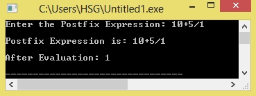

/*C Program to evaluate postfix expression*/
#define SIZE 50
#include<ctype.h>
int s[SIZE];
int top=-1;
push(int data)
{
s[++top]=data;
}
int pop()
{
return(s[top--]);
}
main()
{
char postfix[50],ch;
int i=0,op1,op2;
printf("Enter the Postfix Expression: ");
scanf("%s",postfix);
while( (ch=postfix[i++]) != '\0')
{
if(isdigit(ch)) push(ch-'0');
else
{
op2=pop();
op1=pop();
switch(ch)
{
case '+':push(op1+op2);
break;
case '-':push(op1-op2);
break;
case '*':push(op1*op2);
break;
case '/':push(op1/op2);
break;
}
}
}
printf("\nPostfix Expression is: %s\n",postfix);
printf("\nAfter Evaluation: %d\n",s[top]);
}
Output:
